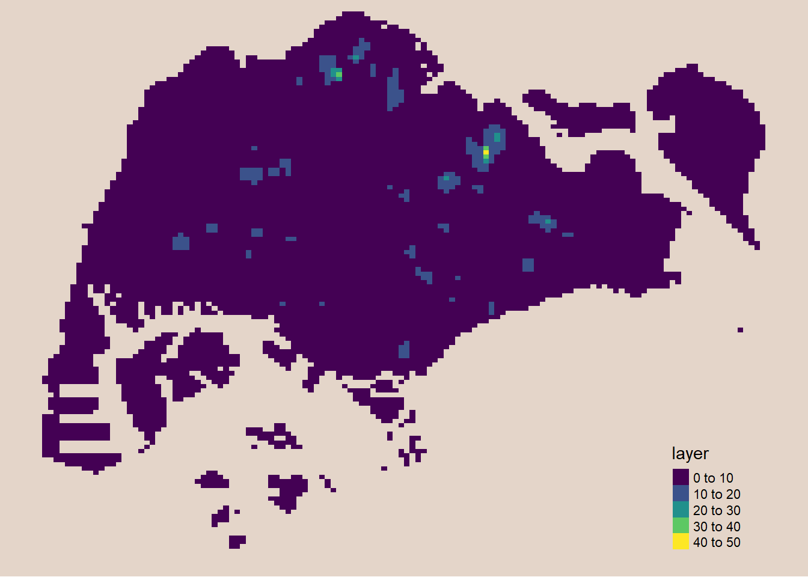

pacman::p_load(sf, spNetwork, tmap, tidyverse)In-class Exercise 2: Spatial Point Patterns Analysis: spatstat Methods
In the first parts of this In-class Exercise, we are going to address some of the issues that my classmates and I have encountered while implementing the past exercises.
Issue 1: Installing maptools
maptools has retired and has already been removed from CRAN, which is one of the more popular R-package sources. However, it is still available in the Posit Public Package Manager.
To avoid maptools being downloaded and installed repetitively every time we run our Quarto Document, we will add the #| eval: false statement at the start of the code chunk.
install.packages(“maptools”, repos = “https://packagemanager.posit.co/cran/2023-10-13”))
Issue 2: Creating Coastal Outline
This section will tackle the 2 functions under the sf package: st_combine() and st_union(). These 2 functions are used to combine multiple simple features into 1 simple feature.
st_combinereturns a single, combined geometry, with no resolved boundaries.If y-coordinates are missing, we can use
st_union(x), which returns a single geometry with resolved boundaries , otherwise will return a geometry for all union pairs ofx[i]andy[j].
Example: Working with st_union()
Let’s derived the coastal outline, which is an sf tibble data.frame.
mpsz_sf <- st_read(dsn = "C:/loriellemalveda/ISSS626-GAA/Hands-on_Ex/Hands-on_Ex03/data/data",
layer = "MP14_SUBZONE_WEB_PL")Reading layer `MP14_SUBZONE_WEB_PL' from data source
`C:\loriellemalveda\ISSS626-GAA\Hands-on_Ex\Hands-on_Ex03\data\data'
using driver `ESRI Shapefile'
Simple feature collection with 323 features and 15 fields
Geometry type: MULTIPOLYGON
Dimension: XY
Bounding box: xmin: 2667.538 ymin: 15748.72 xmax: 56396.44 ymax: 50256.33
Projected CRS: SVY21childcare_sf <- st_read("C:/loriellemalveda/ISSS626-GAA/Hands-on_Ex/Hands-on_Ex03/data/data/child-care-services-geojson.geojson") %>%
st_transform(crs = 3414)Reading layer `child-care-services-geojson' from data source
`C:\loriellemalveda\ISSS626-GAA\Hands-on_Ex\Hands-on_Ex03\data\data\child-care-services-geojson.geojson'
using driver `GeoJSON'
Simple feature collection with 1545 features and 2 fields
Geometry type: POINT
Dimension: XYZ
Bounding box: xmin: 103.6824 ymin: 1.248403 xmax: 103.9897 ymax: 1.462134
z_range: zmin: 0 zmax: 0
Geodetic CRS: WGS 84childcare <- as_Spatial(childcare_sf)
sg_sf <- mpsz_sf %>%
st_union()
plot(sg_sf)
Checking the other necessary R packages.
pacman::p_load(sf, tidyverse, tmap, ggplot2, ggstatsplot, dplyr, spatstat, raster, readxl)For the latter parts, we are going to discuss the spatstat package.
Introducing the spatstat package
The spatstat package is an R package used to analyze Spatial Point Patterns that focuses mainly on 2D point patterns, including multitype or marked points, in any spatial region.
Creating ppp objects from sf data.frame
We are going to introduce another approach to creating ppp objects, aside from the one we have discussed in the past Hands-on Exercise.
childcare_ppp <- as.ppp(childcare_sf)Warning in as.ppp.sf(childcare_sf): only first attribute column is used for
marksplot(childcare_ppp)Warning in default.charmap(ntypes, chars): Too many types to display every type
as a different characterWarning: Only 10 out of 1545 symbols are shown in the symbol map
summary(childcare_ppp)Marked planar point pattern: 1545 points
Average intensity 1.91145e-06 points per square unit
Coordinates are given to 11 decimal places
marks are of type 'character'
Summary:
Length Class Mode
1545 character character
Window: rectangle = [11203.01, 45404.24] x [25667.6, 49300.88] units
(34200 x 23630 units)
Window area = 808287000 square unitsCreating an owin object from sf data.frame
Let us now use as.owin() of the spatstat package to create an owin object from a polygon sf tibble data.frame.
sg_owin <- as.owin(sg_sf)
plot(sg_owin)
summary(sg_owin)Window: polygonal boundary
80 separate polygons (35 holes)
vertices area relative.area
polygon 1 14650 6.97996e+08 8.93e-01
polygon 2 (hole) 3 -2.21090e+00 -2.83e-09
polygon 3 285 1.61128e+06 2.06e-03
polygon 4 (hole) 3 -2.05920e-03 -2.63e-12
polygon 5 (hole) 3 -8.83647e-03 -1.13e-11
polygon 6 668 5.40368e+07 6.91e-02
polygon 7 44 2.26577e+03 2.90e-06
polygon 8 27 1.50315e+04 1.92e-05
polygon 9 711 1.28815e+07 1.65e-02
polygon 10 (hole) 36 -4.01660e+04 -5.14e-05
polygon 11 (hole) 317 -5.11280e+04 -6.54e-05
polygon 12 (hole) 3 -3.41405e-01 -4.37e-10
polygon 13 (hole) 3 -2.89050e-05 -3.70e-14
polygon 14 77 3.29939e+05 4.22e-04
polygon 15 30 2.80002e+04 3.58e-05
polygon 16 (hole) 3 -2.83151e-01 -3.62e-10
polygon 17 71 8.18750e+03 1.05e-05
polygon 18 (hole) 3 -1.68316e-04 -2.15e-13
polygon 19 (hole) 36 -7.79904e+03 -9.97e-06
polygon 20 (hole) 4 -2.05611e-02 -2.63e-11
polygon 21 (hole) 3 -2.18000e-06 -2.79e-15
polygon 22 (hole) 3 -3.65501e-03 -4.67e-12
polygon 23 (hole) 3 -4.95057e-02 -6.33e-11
polygon 24 (hole) 3 -3.99521e-02 -5.11e-11
polygon 25 (hole) 3 -6.62377e-01 -8.47e-10
polygon 26 (hole) 3 -2.09065e-03 -2.67e-12
polygon 27 91 1.49663e+04 1.91e-05
polygon 28 (hole) 26 -1.25665e+03 -1.61e-06
polygon 29 (hole) 349 -1.21433e+03 -1.55e-06
polygon 30 (hole) 20 -4.39069e+00 -5.62e-09
polygon 31 (hole) 48 -1.38338e+02 -1.77e-07
polygon 32 (hole) 28 -1.99862e+01 -2.56e-08
polygon 33 40 1.38607e+04 1.77e-05
polygon 34 (hole) 40 -6.00381e+03 -7.68e-06
polygon 35 (hole) 7 -1.40545e-01 -1.80e-10
polygon 36 (hole) 12 -8.36709e+01 -1.07e-07
polygon 37 45 2.51218e+03 3.21e-06
polygon 38 142 3.22293e+03 4.12e-06
polygon 39 148 3.10395e+03 3.97e-06
polygon 40 75 1.73526e+04 2.22e-05
polygon 41 83 5.28920e+03 6.76e-06
polygon 42 211 4.70521e+05 6.02e-04
polygon 43 106 3.04104e+03 3.89e-06
polygon 44 266 1.50631e+06 1.93e-03
polygon 45 71 5.63061e+03 7.20e-06
polygon 46 10 1.99717e+02 2.55e-07
polygon 47 478 2.06120e+06 2.64e-03
polygon 48 155 2.67502e+05 3.42e-04
polygon 49 1027 1.27782e+06 1.63e-03
polygon 50 (hole) 3 -1.16959e-03 -1.50e-12
polygon 51 65 8.42861e+04 1.08e-04
polygon 52 47 3.82087e+04 4.89e-05
polygon 53 6 4.50259e+02 5.76e-07
polygon 54 132 9.53357e+04 1.22e-04
polygon 55 (hole) 3 -3.23310e-04 -4.13e-13
polygon 56 4 2.69313e+02 3.44e-07
polygon 57 (hole) 3 -1.46474e-03 -1.87e-12
polygon 58 1045 4.44510e+06 5.68e-03
polygon 59 22 6.74651e+03 8.63e-06
polygon 60 64 3.43149e+04 4.39e-05
polygon 61 (hole) 3 -1.98390e-03 -2.54e-12
polygon 62 (hole) 4 -1.13774e-02 -1.46e-11
polygon 63 14 5.86546e+03 7.50e-06
polygon 64 95 5.96187e+04 7.62e-05
polygon 65 (hole) 4 -1.86410e-02 -2.38e-11
polygon 66 (hole) 3 -5.12482e-03 -6.55e-12
polygon 67 (hole) 3 -1.96410e-03 -2.51e-12
polygon 68 (hole) 3 -5.55856e-03 -7.11e-12
polygon 69 234 2.08755e+06 2.67e-03
polygon 70 10 4.90942e+02 6.28e-07
polygon 71 234 4.72886e+05 6.05e-04
polygon 72 (hole) 13 -3.91907e+02 -5.01e-07
polygon 73 15 4.03300e+04 5.16e-05
polygon 74 227 1.10308e+06 1.41e-03
polygon 75 10 6.60195e+03 8.44e-06
polygon 76 19 3.09221e+04 3.95e-05
polygon 77 145 9.61782e+05 1.23e-03
polygon 78 30 4.28933e+03 5.49e-06
polygon 79 37 1.29481e+04 1.66e-05
polygon 80 4 9.47108e+01 1.21e-07
enclosing rectangle: [2667.54, 56396.44] x [15748.72, 50256.33] units
(53730 x 34510 units)
Window area = 781945000 square units
Fraction of frame area: 0.422Combining a Point Events Object and an owin Object
The code chunk below creates a ppp object by combining childcare_ppp and sg_owin.
childcareSG_ppp = childcare_ppp[sg_owin]plot(childcareSG_ppp)Warning in default.charmap(ntypes, chars): Too many types to display every type
as a different characterWarning: Only 10 out of 1545 symbols are shown in the symbol map
The output object combined both the point and polygon feature in 1 ppp object class.
Kernel Density Estimation of a Spatial Point Event
The code chunk below re-scales the unit of measurement from meter –> kilometer before performing KDE.
childcareSG_ppp.km <- rescale.ppp(childcareSG_ppp,
1000,
"km")
kde_childcareSG_adaptive <- adaptive.density(
childcareSG_ppp.km,
method="kernel")
plot(kde_childcareSG_adaptive)
There are 2 different ways to convert the KDE output into a grid object.
- maptools method
par(bg = '#E4D5C9')
gridded_kde_childcareSG_ad <- maptools::as.SpatialGridDataFrame.im(
kde_childcareSG_adaptive)Please note that 'maptools' will be retired during October 2023,
plan transition at your earliest convenience (see
https://r-spatial.org/r/2023/05/15/evolution4.html and earlier blogs
for guidance);some functionality will be moved to 'sp'.
Checking rgeos availability: FALSEspplot(gridded_kde_childcareSG_ad)
- spatstat.geom method
gridded_kde_childcareSG_ad <- as(
kde_childcareSG_adaptive,
"SpatialGridDataFrame")
spplot(gridded_kde_childcareSG_ad)
Visualizing KDE using tmap
The code chunk below is used to plot the output raster by using tmap functions.
kde_childcareSG_ad_raster <- raster(kde_childcareSG_adaptive)tm_shape(kde_childcareSG_ad_raster) +
tm_raster(palette = "viridis") +
tm_layout(legend.position = c("right", "bottom"),
frame = FALSE,
bg.color = "#E4D5C9")Warning: Currect projection of shape kde_childcareSG_ad_raster unknown. Long
lat (epsg 4326) coordinates assumed.
Extracting Study Area Using sf Objects
We are going to extract and create a ppp object showing child care services within the Punggol Planning Area.
pg_owin <- mpsz_sf %>%
filter(PLN_AREA_N == "PUNGGOL") %>%
as.owin()
childcare_pg = childcare_ppp[pg_owin]
plot(childcare_pg) Warning in default.charmap(ntypes, chars): Too many types to display every type
as a different characterWarning: Only 10 out of 61 symbols are shown in the symbol map
Note that we used filter() of the dplyr package to extract the target planning areas, i.e. for this case it is the Punggol Planning Area.
Monte Carlo Simulation
Note: To ensure reproducibility, it is important to include the code chunk below before using spatstat functions involving Monte Carlo simulations.
set.seed(1234)Edge Correction Methods of spatstat
In spatstat, Edge Correction Methods helps avoid biases that arise when estimating spatial statistics near the boundaries of a study region.
This is important to ensure accurate estimates in spatial point pattern analysis, especially for summary statistics like the K-function, L-function, etc. even though doing this increases computing time.
Geospatial Analytics for Social Good: Thailand Road Accident Case Study
Background
Study Area
The study area is Bangkok Metropolitan Region.

Thailand’s projected coordinate system is WGS 84 / UTM zone 47N and the EPSG code is 32647.
Data to be Used
For the purpose of this exercise, three basic data sets are needed, they are:
Importing Traffic Accident Data
Recall the previous exercises and import the data.
rdacc_sf <- read_csv("data/thai_road_accident_2019_2022.csv") %>%
filter(!is.na(longitude) & longitude != "",
!is.na(latitude) & latitude !="") %>%
st_as_sf(coords= c("longitude", "latitude"),
crs=4326) %>%
st_transform(crs=32647)Rows: 81735 Columns: 18
── Column specification ────────────────────────────────────────────────────────
Delimiter: ","
chr (10): province_th, province_en, agency, route, vehicle_type, presumed_c...
dbl (6): acc_code, number_of_vehicles_involved, number_of_fatalities, numb...
dttm (2): incident_datetime, report_datetime
ℹ Use `spec()` to retrieve the full column specification for this data.
ℹ Specify the column types or set `show_col_types = FALSE` to quiet this message.